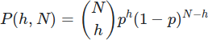
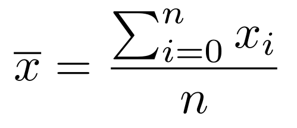
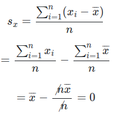
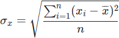

Tenendo conto che la probabilità di incrementare l'altezza di una colonna a una data iterazione è di p=1/L, dove L è la lunghezza in cubetti della linea, quindi appunto uniforme, la probabilità che N colonne abbiano una certa altezza h è ossia una distribuzione binomiale, che tipicamente descrive i fenomeni che dipendono dalla ripetizione di eventi con una certa probabilità fissata.  Torna su
Quando si possiedono più misure di una medesima quantità, le quali possono differire tra loro, può non essere ovvio quale sia il numero "giusto" da prendere ed è qui che entra in gioco il concetto di media, che stima il valore in qualche modo centrale tra tutti quelli misurati:  Per capire meglio il concetto, si può considerare la "media delle differenze tra tutti i singoli valori misurati e la media stessa", che per sua stessa natura risulta essere sempre zero, in quanto le differenze, o scarti, si cancellano a vicenda:  Un modo per ottenere un risultato diverso da zero, che in effettti dia una stima di quanto l'insieme di misure sia sparso rispetto alla media, è fare la media non degli scarti, ma del loro quadrato; la definizione contiene una radice quadrata, che riporta tutto alle dimensioni giuste (per esempio, se parliamo di lunghezze, il quadrato degli scarti sarebbe espresso in metri quadrati, il che avrebbe poco senso; prendere la radice quadrata fa tornare tutto in metri, la grandezza che ci serve):  Torna su